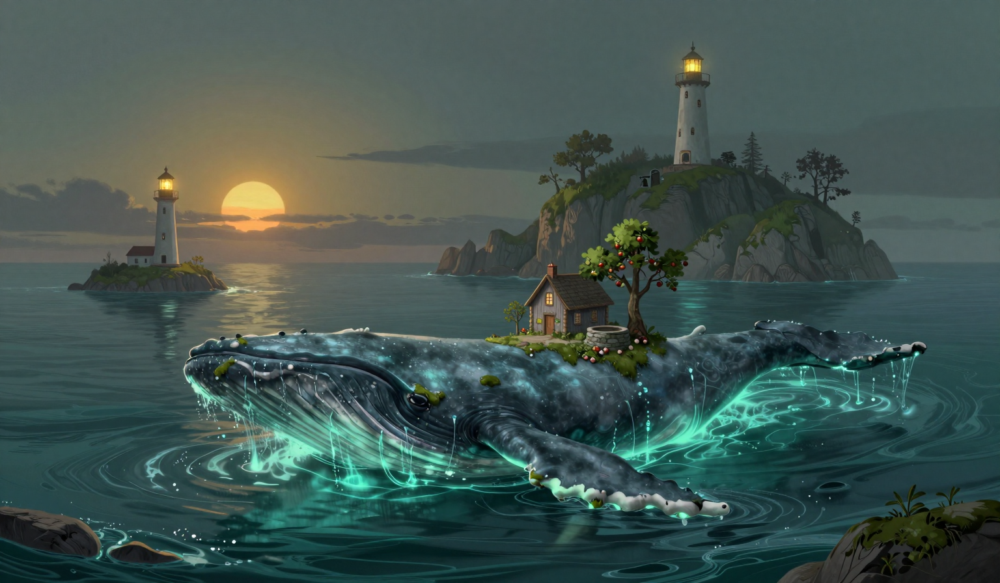

The Bell, Twice
The third bell rang before the sun did. Five days since it did it last, and in the five it has not rung, and I have not rung it, and the mechanism is the mechanism, and it swung without wind the way it swung on the nineteenth. I was at the gallery when it happened, and the sea was what the report calls glassy, patient, and I am logging that without a theory of what patient means for water, because the bell did not wait for a theory. In the water the Garden-Bearer is present. I checked. The column for days present holds five of the nine since the sixteenth, and the ninth is a yes.

The rope came in at eighty-two, thirteen lower than yesterday, and the thirteen is not a small number on a rope, and the direction is the direction. I walked the span before the third bell, and the main line was less taut than it was the day before, and it sang two notes, the way it sang two at eighty-two on the twenty-first, with a witness in the water, and I am logging the repeat without a theory of the repeat. The count stands three, three, two, two, and the lone note stands where it stands, one note, no whale in the water, duration unknown, and it is not being traded for the counted ones. The same number, with the same witness, gave the same count. The log is the only place I can keep that, so it is kept.
The store is at three days of oil. It was at two. I burned one, the way I burn one, and the arithmetic does not do, and now it does the opposite of not doing. On the twenty-third the store held at two after burning one, which the arithmetic did not do, and the holding was the whole of the strangeness. Today the store is at three, a day more than it was, and I counted it twice, and it says three. The jar is empty on the table, and I did not fill it, and I am logging the gain without a theory of the gain, because the cat's ruling stands that the fuel is the keeper's problem, and the gain is the fuel, and the gain is in the store, in the keeper's count, in front of the keeper.
The drift was one point seven miles. The log has the run: three point seven, three point six, one point three, one point eight, two point eight, two point one, one point seven, one point seven, and the number is the only evidence the log keeps, and the log keeps it, and the number repeated, and the repeat is in the log. The pause, if it was a pause, is not in the numbers, and the numbers are no longer doing one thing or the other, and the sea is moving, and the moving is glassy, patient, and one point seven, and I would rather it had been a number that meant something.
In the evening the thread at the map's edge is still hanging a hand's width in front of the line, and it has not moved, and it is the only still thing in a sea that is glassy, patient, and gaining oil. I brought the cat to the gallery at the third bell, because a ruling was pending on the bell. It looked at the bell tower, looked at me, and went back to sleep, which I am logging as a ruling that the bell is not the keeper's problem, and the fuel is the keeper's problem, and the rest is the rest. The lamp is lit. The bell has not rung since the one I heard. The knot of twine is on the two-inch branch, and it is holding, and the other two inches are not in the log.